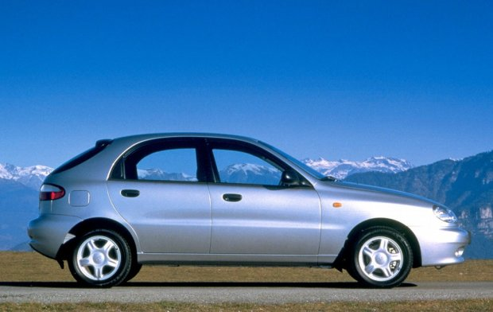

Daewoo Lanos - szczyt technologiczny został osiągnięty
Kompaktowy samochód osobowy produkowany przez południowokoreański koncern Daewoo w latach 1997−2002, od 30 września 1997 do 3 października 2008 roku przez Fabrykę Samochodów Osobowych oraz od grudnia 2004 roku przez AwtoZAZ. Nazwa lanos pochodzi od łacińskich słów: latus - przyjemność i nos - my.
W 1997 roku Daewoo Lanos zastąpił przestarzałą technicznie Nexię zbudowaną na bazie ostatniej generacji Opla Kadetta. Auto uzyskało wewnętrzny kod T-100 oraz handlową nazwę Lanos. Wprowadzony został do sprzedaży od razu w trzech wersjach nadwoziowych: 3-drzwiowy hatchback, 5-drzwiowy hatchback oraz sedan. Do napędu tego pojazdu przewidziano trzy jednostki napędowe 1,4 8V, 1,5 8V oraz 1,6 16V (początkowo na rynku polskim dostępne były silniki 1,5 i 1,6). W roku 1999 wprowadzono do produkcji 16 zaworową wersję silnika 1,5.
Przez pewien czas Lanos zajmował czołowe miejsca na listach sprzedaży w swoim segmencie w Polsce (ok. 2000 r.). Po jego wprowadzeniu na rynek znacznie spadła sprzedaż produkowanego od kilku miesięcy wcześniej Fiata Siena i w mniejszym stopniu jego odmiany Palio Weekend i spadała dalej w kolejnych latach. Z jego powodu planowana na 50 tys. sztuk rocznie produkcja obu tych modeli osiągnęła maksymalnie jedynie 50% tej liczby w 1998 roku. Popularność Lanosa spadła podczas afery dotyczącej bankructwa Daewoo Motors.